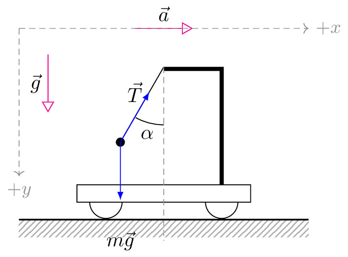

pre.tex
\documentclass[tikz]{standalone}\input{pre.tex}\begin{document}\begin{tikzpicture}
\begin{scope}[scale=1]
\draw (0.5,0) circle (0.28);
\draw[acceleration,->] (1,3) -- node[above] {$\vec{a}$} ++ (1,0);
\draw[axis,->] (-1,3) -- ++ (5,0) node[right] {$+x$};
\draw[axis,->] (-1,3) -- ++ (0,-2.55) node[below] {$+y$};
\draw (2.5,0) circle (0.28);
\draw[fill=white] (0,0) rectangle (3,0.3);
\draw[line width=2pt] (2.5,0.3) -- ++(0,2) -- ++(-1,0) ++(0,1pt) coordinate (o);
\draw[fill=black] (o) -- ++(-120:1.5cm) coordinate (b) circle (2pt);
\draw[axis] (o) -- ++ (0,-3);
\draw[interface] (-1,-0.3) rectangle ++(5,-0.3);
\draw[thick] (-1,-0.3) -- ++(5,0);
\draw[force,->] (b) -- ++(0,-1) node[below, yshift=-1.2em] {$m\vec{g}$};
\draw[force,->] (b) -- ++(60:1) node[left] {$\vec{T}$};
\draw[solid,shorten >=0.5pt, ] (o) ++ (-90:1)
arc(-90:-120:1);
\node at ($(o) + (-104:1.2)$) {$\alpha$};
\draw[acceleration,->] (-0.5,2.55) -- node[left] {$\vec{g}$} ++(0,-1);
\end{scope}
\end{tikzpicture}\end{document}